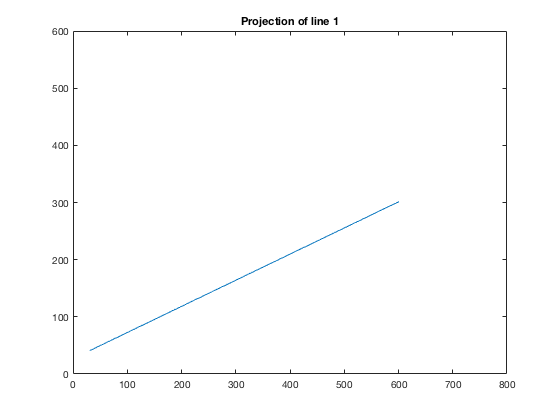
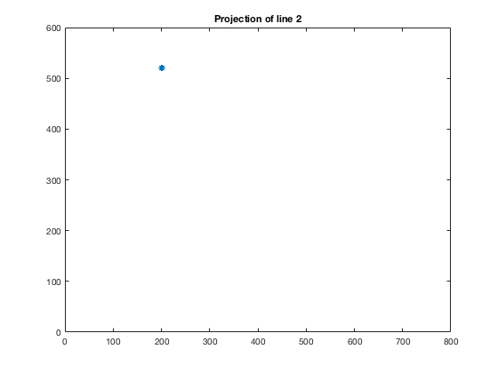
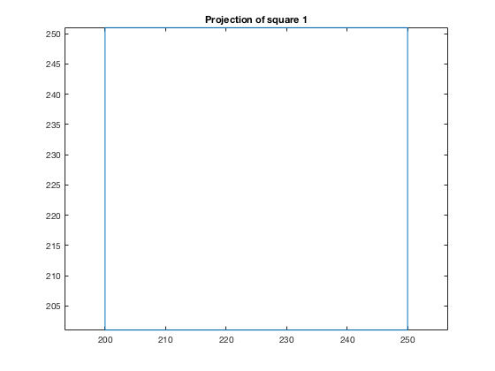
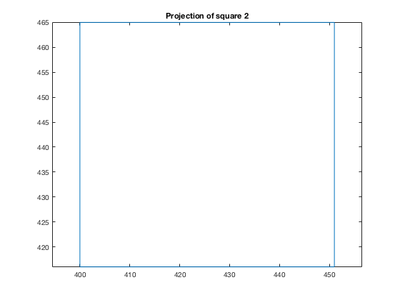

f = .004;
w = .0048;
h = .0036;
fov = (180 / pi) * 2 * [atan(w / (2 * f)), atan(h / (2 * f))];
fprintf('Field of view\n');
fprintf('Horizontal: %f degrees\nVertical: %f degrees\n\n',fov(1),fov(2));
numpoint = 1000;
line1 = [linspace(-36.6,23.1,numpoint);linspace(-25.7,0.1,numpoint);linspace(66.0,77.0,numpoint)];
line2 = [linspace(-45.0,-81.0,numpoint);linspace(49.7,89.5,numpoint);linspace(150.0,270.0,numpoint)];
line1proj = camera(line1);
line2proj = camera(line2);
figure(1);
plot(line1proj(1,:), line1proj(2,:));
axis([0, 800, 0, 600]);
title('Projection of line 1');
figure(2);
plot(line2proj(1,:), line2proj(2,:), '-*');
axis([0, 800, 0, 600]);
title('Projection of line 2');
fprintf('Line 1 collapses onto a single point in the projection, while line 2 appears to be a line\n');
s1pt = 1000;
s1w = 7.5;
square1 = makeSquare([-30.0, -15.0, 100.0],7.5,1000);
square2 = makeSquare([0.0, 27.6, 160.0],12,1000);
square1proj = camera(square1);
square2proj = camera(square2);
figure(3);
plot(square1proj(1,:), square1proj(2,:));
title('Projection of square 1');
axis('equal');
figure(4);
plot(square2proj(1,:), square2proj(2,:));
title('Projection of square 2');
axis('equal');
fprintf('The two squares have the same relative size in the projection');
function coords = makeSquare(lbcoords, width, n)
side1 = [linspace(lbcoords(1),lbcoords(1)+width,n);linspace(lbcoords(2),lbcoords(2),n);linspace(lbcoords(3),lbcoords(3),n)];
side2 = [linspace(lbcoords(1),lbcoords(1),n);linspace(lbcoords(2),lbcoords(2)+width,n);linspace(lbcoords(3),lbcoords(3),n)];
side3 = [linspace(lbcoords(1)+width,lbcoords(1)+width,n);linspace(lbcoords(2),lbcoords(2)+width,n);linspace(lbcoords(3),lbcoords(3),n)];
side4 = [linspace(lbcoords(1),lbcoords(1)+width,n);linspace(lbcoords(2)+width,lbcoords(2)+width,n);linspace(lbcoords(3),lbcoords(3),n)];
coords = [side1, side2, side4, side3];
end
function icoords = camera(wcoords)
[M, N] = size(wcoords);
if (M ~= 3)
error('Input needs to be 3D column vector(s).');
end
xvals = wcoords(1,:);
yvals = wcoords(2,:);
zvals = wcoords(3,:);
f = .004;
w = .0048;
h = .0036;
W = 800;
H = 600;
dr1 = w / W;
dr2 = h / H;
r1 = f * xvals ./ zvals;
r2 = f * yvals ./ zvals;
R1 = ceil(r1./dr1) + (W / 2);
R2 = ceil(r2./dr2) + (H / 2);
icoords = [R1; R2];
end
Field of view
Horizontal: 61.927513 degrees
Vertical: 48.455491 degrees
Line 1 collapses onto a single point in the projection, while line 2 appears to be a line
The two squares have the same relative size in the projection
   